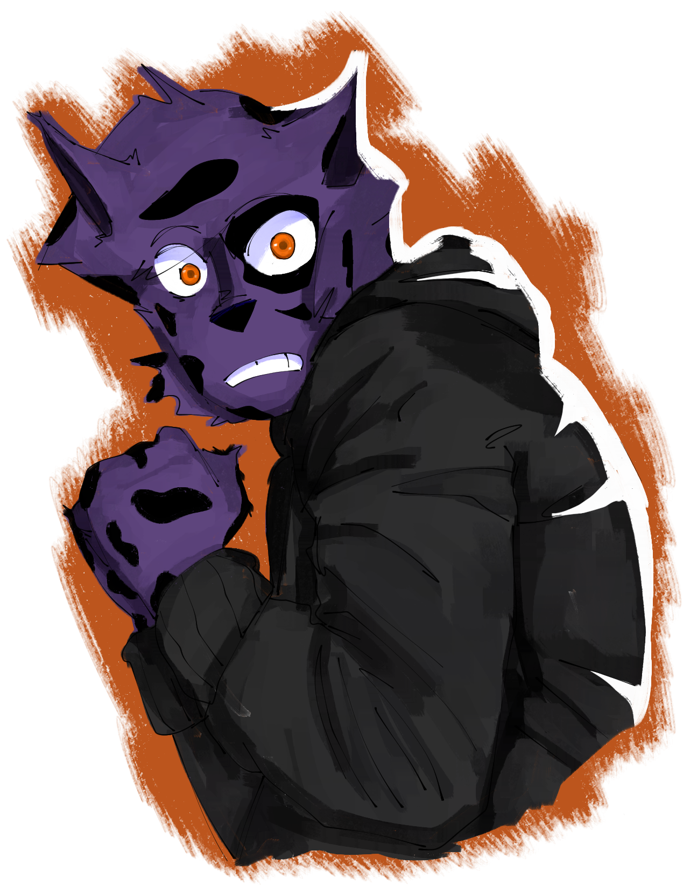
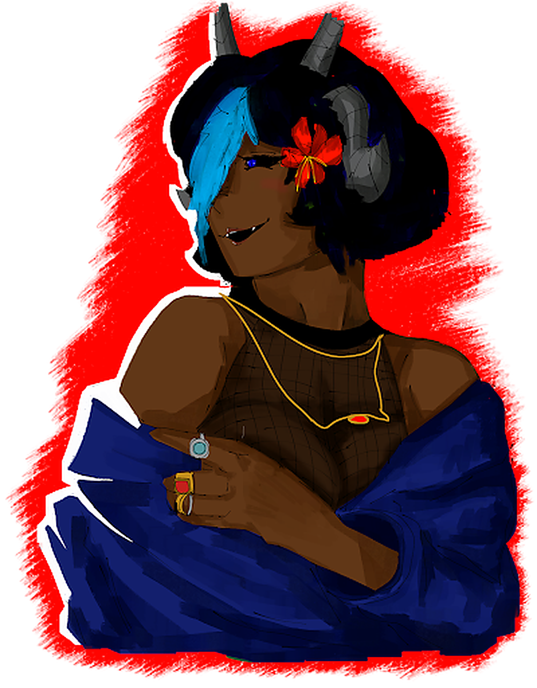
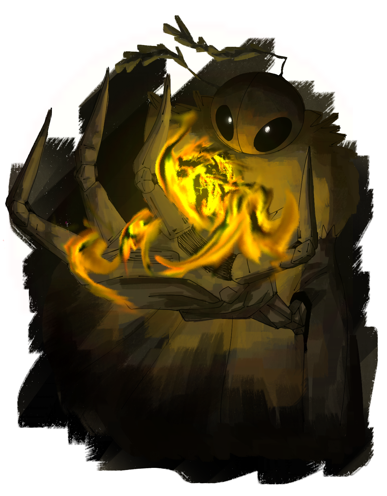
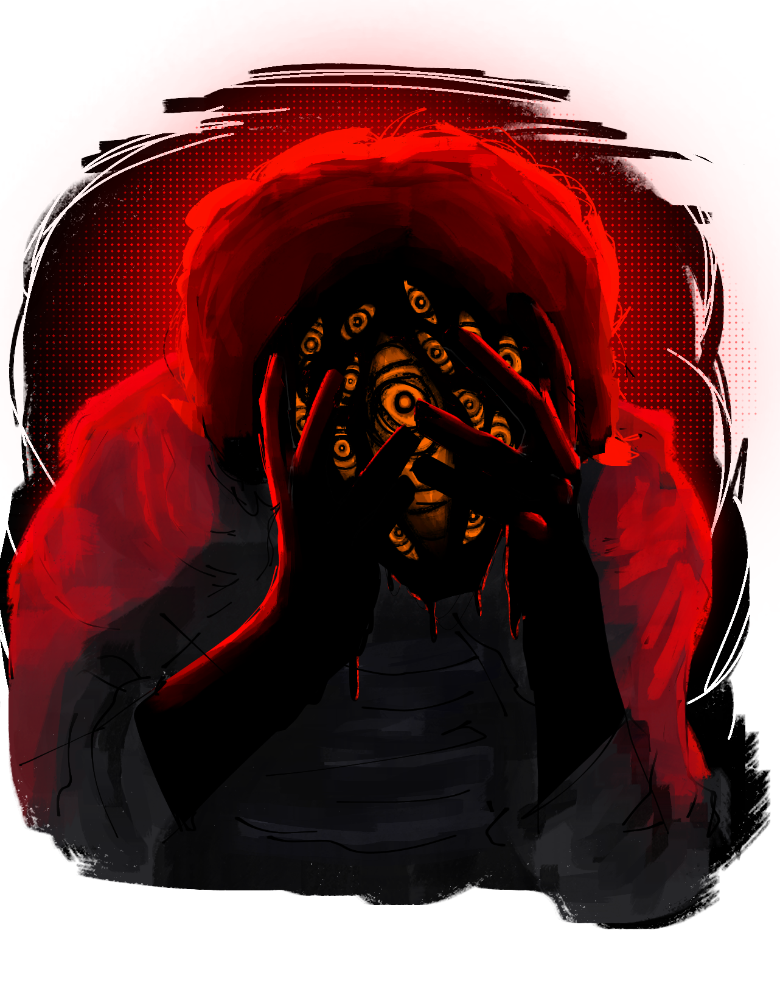
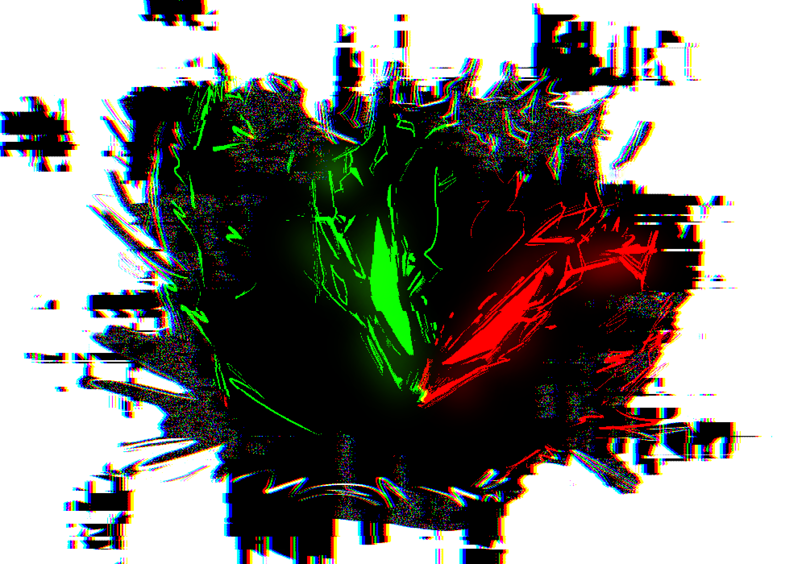

Raças Adaptadas para Fios do Medo
As raças de Wuitalur foram adaptadas para o contexto de horror e investigação do suplemento. Cada raça concede 1 Bônus e 2 Habilidades que custam PE.

Akivus
Seres da floresta com chifres adornados por vinhas e flores. Sua conexão com a natureza é tanto uma bênção quanto um peso em um mundo que ruem.
✦ Cheiro do Perigo (2 PE)
Parando em silêncio, o Akivus pode farejar o ar para detectar ameaças ocultas em um raio de 10m. Ele pode rolar um teste de Mente (Vantagem) para perceber emboscadas.
✦ Passo Silencioso (2 PE)
Move-se sem emitir som por 1 cena. Não provoca ataques de oportunidade ao se mover e ganha +d4 em testes de furtividade.

Animalescos
Animais antropomórficos ou pessoas com características animais. Seus instintos são afiados, mas o medo humano também os corrói.
✦ Percepção Aprimorada (2 PE)
Seus sentidos animais se aguçam. Ganha vantagem em testes de Mente para detectar presenças, sons ou cheiros suspeitos por 1 cena.
✦ Instinto de Sobrevivência (3 PE)
Em situações de perigo iminente, o corpo reage antes da mente. Sube 1 degrau no dado de Vigor ou Força para a próxima ação.

Plantíferos
Plantas humanoides que carregam a serenidade da natureza. Sua presença é reconfortante, mas o terror os afeta como qualquer outro ser.
✦ Neblina Protetora (3 PE)
Libera pólen calmante em uma área de 3m ao redor. Aliados na área tem a sua Barra de Estresse reduzida em d4 + Mente do Plantífero.
✦ Sentir a Terra (2 PE)
Toque o chão e sinta vibrações. Detecta criaturas vivas em um raio de 15m, mesmo através de paredes, por 1 rodada.

Humanos
Versáteis e adaptáveis, os humanos compensam a falta de habilidades extraordinárias com pura determinação e capacidade de aprendizado.
✦ Determinação Implacável (2 PE)
Quando falhar em um teste de resistência, pode gastar 2 PE para refazê-lo com vantagem. Uma vez por cena.
✦ Adaptação Rápida (3 PE)
Observa um aliado e o compreende instantaneamente. Ganha +d4 no próximo teste do mesmo tipo até o fim da cena.

Vampiros
Seres elegantes e pálidos que se alimentam de sangue. Sua natureza predatória os torna resistentes ao medo, mas sua sede pode ser sua ruína.
✦ Mordida Vampírica (3 PE)
Morde um alvo adjacente para drenar sangue. Causa dano igual a uma rolagem de Força e restaura PV iguais à metade do dano causado.
✦ Presença Hipnótica (2 PE)
Exerce magnetismo sobrenatural. Ganha vantagem em testes de Mente para intimidar ou convencer até o fim da cena.

Dragão Anão
Pequenos seres dracônicos de Tragnor, com escamas coloridas e antenas sensoriais. Sua tecnologia ancestral os torna úteis, mas seu porte diminuto é uma vulnerabilidade.
✦ Sopro Ancestral (4 PE)
Expele um cone de energia elemental (frio, fogo ou ácido) de 3m. Inimigos na área sofrem dano igual a uma rolagem de Força e devem passar em teste de Vigor (CT 13) ou ficam atordoados por 1 rodada.
✦ Conexão Sensorial (2 PE)
Usa suas antenas para se comunicar telepaticamente com aliados a até 20m por 1 cena. Transmite emoções, imagens simples e intenções.

Insectóides
Herança viva dos experimentos da Era Dourada — humanos fundidos a traços de insetos. Sua natureza fria e calculista os torna resistentes, mas temidos por todos.
✦ Exoesqueleto (3 PE)
Endurece seu exoesqueleto por 1 rodada. Reduz todo dano recebido pela metade e ganha resistência a veneno e doenças.
✦ Enxame de Distração (3 PE)
Libera um enxame de insetos pequenos que atormentam um alvo a até 10m. O alvo deve passar em teste de Vigor (CT 12) ou sofre -d4 em testes de acerto até o fim do seu próximo turno.

Praguentos
Seres condenados pela Podridão a renascer como cópias pálidas do que foram, cobertos por lodo negro. Sua existência é uma distorção da vida.
✦ Manipulação de Lodo (3 PE)
Forma uma arma de lodo com seu próprio corpo. Causa dano igual a uma rolagem de Força + Vigor. Dura 1 rodada.
✦ Corpo de Lodo (4 PE)
Transforma temporariamente seu corpo em lodo puro. Imune a dano físico por 1 rodada, mas não pode atacar. Pode se mover livremente através de fendas e aberturas.

Abissal
Seres que vivem no abismo abaixo da terra, com corpos tomados pela Praga. Pele pálida, veias negras e olhos completamente pretos como um vazio.
✦ Telepatia (2 PE)
Usa suas antenas bioluminescentes para se comunicar mentalmente com aliados a até 30m. Transmite pensamentos, imagens e emoções por 1 cena.
✦ Confusão (3 PE)
Imita vozes familiares ou barulhos ensurdecedores na mente de um alvo a até 10m. O alvo deve passar em teste de Mente (CT 14) ou fica confuso por 1 rodada, perdendo sua próxima ação.

E.X.O.s
Autômatos de metal criados por Paladium, movidos pelo minério Everact. Alguns desenvolveram sentimentos — e agora sentem medo pela primeira vez.
✦ Mira Telemétrica (3 PE)
Sensores ópticos calculam vento, distância e trajetória. Ganha vantagem em testes de ataque à distância até o fim da cena.
✦ Torque Forçado (2 PE)
Trava engrenagens no solo para aplicar força bruta. Ganha +d4 em testes de Força para erguer cargas, arrombar portas ou resistir a ser empurrado.

Espectros
DESABILITADOEsta raça está desabilitada no suplemento Fios do Medo. Sua natureza de anomalia dimensional e mecânicas únicas (Estabilidade, sem PV) não se encaixam no contexto de investigação e terror do suplemento.